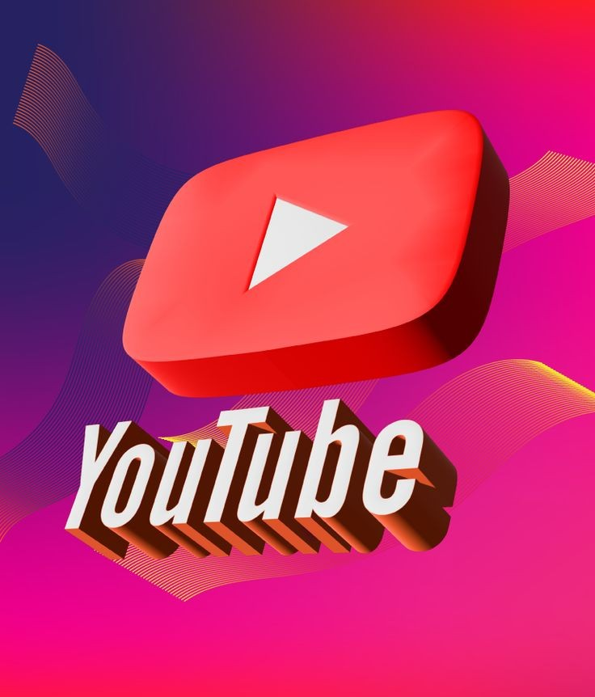

Top YouTube Marketing Strategies for Your Small Business in 2025
By Jaja Victor Barisuka | Published on January 19, 2025

Let’s be real, YouTube isn’t just for funny cat videos anymore. It’s a powerful marketing tool, and in 2025, small businesses like yours can absolutely crush it with the right strategies. Not sure where to begin? Don’t worry—I’ve got you covered!
1. Know Your Audience and Niche
Before you hit record, you need to know who you’re talking to. Identify your target audience and their pain points.
What problems does your product or service solve?
What kind of content do they watch on YouTube?
Which competitors are they following?
Once you figure that out, you can create videos that speak directly to them!
2. Create High-Quality, Value-Packed Videos
Quality over quantity, always. Your videos should educate, entertain, or inspire. Need ideas? Try these:
Tutorials: Teach your audience how to use your products.
Behind-the-Scenes: Show how your business operates.
Product Demos: Highlight product features and benefits.
Customer Testimonials: Share real success stories.
3. Optimize Your Channel and Videos for SEO
YouTube is the second-largest search engine. If you’re not optimizing your content, you’re missing out.
Titles: Use relevant keywords but keep it catchy. Example: “Top Marketing Tools for Small Businesses in 2025.”
Descriptions: Write detailed descriptions with keywords and links to your website.
Tags: Include relevant keywords to improve discoverability.
Thumbnails: Design eye-catching thumbnails with bold text.
4. Leverage YouTube Shorts
Short-form videos are dominating right now. Use YouTube Shorts to create quick, engaging videos that promote your products or services.
Example: “3 Quick Marketing Tips for Small Businesses! #Shorts”
5. Include Clear Calls-to-Action (CTAs)
Don’t assume viewers know what to do next. Guide them!
“Like this video? Subscribe for more business tips!”
“Visit our website to learn more!”
“Download our free guide—link in the description!”
6. Collaborate with Other Creators
Collabs are GOLD. Partner with other small businesses or influencers in your niche to cross-promote content.
Organic growth is great, but ads can speed things up. YouTube Ads let you target your ideal audience with:
In-Stream Ads: Play before, during, or after videos.
Discovery Ads: Appear in search results and related videos.
Bumper Ads: Short, unskippable ads (6 seconds).
8. Use Playlists to Keep Viewers Watching
Organize your videos into playlists to keep viewers engaged longer. For example:
“Marketing Tips for Small Businesses”
“How to Use Our Products”
“Success Stories from Our Customers”
9. Engage with Your Audience
Social media is a two-way street. Build a community by:
Responding to comments.
Asking questions in your videos.
Using polls in the Community tab.
The more engaged your audience feels, the more loyal they’ll be.
10. Track Performance and Adjust
Use YouTube Analytics to track what’s working and what’s not. Pay attention to:
Watch time and retention rates.
Click-through rates (CTR) on thumbnails.
Subscriber growth and traffic sources.
Double down on what’s working and tweak what isn’t.
Final Thoughts
YouTube is a marketing powerhouse in 2025. By creating valuable content, engaging with your audience, and optimizing for SEO, your small business can stand out and grow like never before.
Ready to take your business to the next level? Let’s make it happen! Contact me here for more strategies.